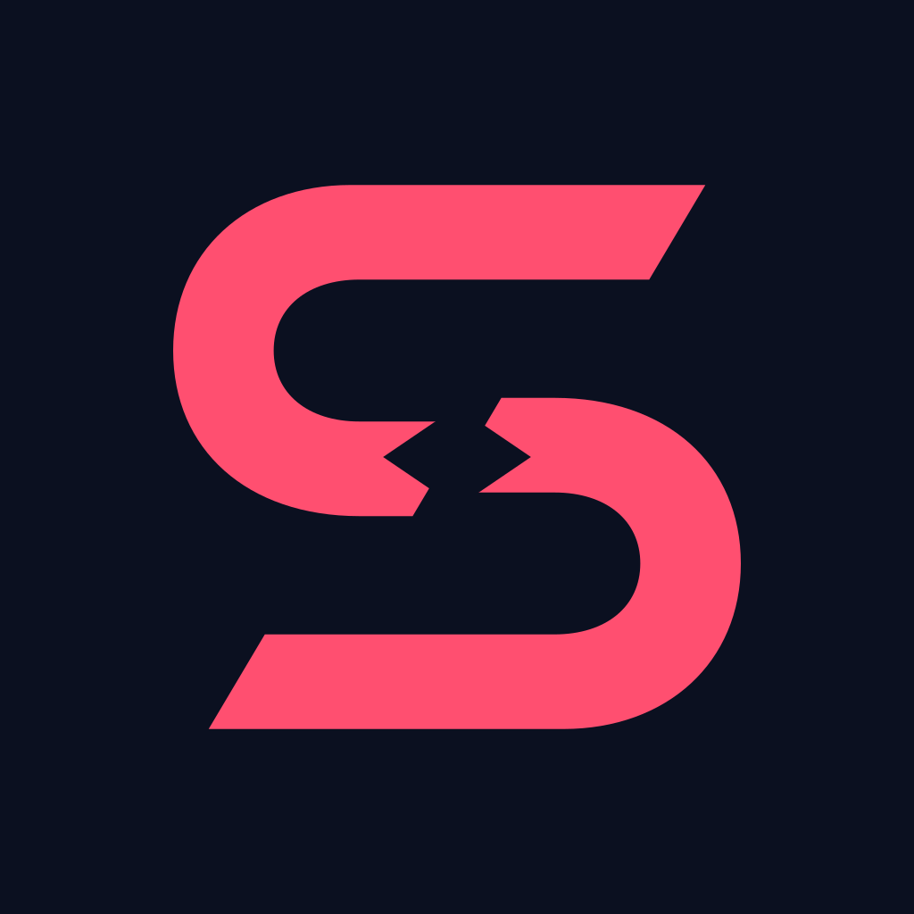
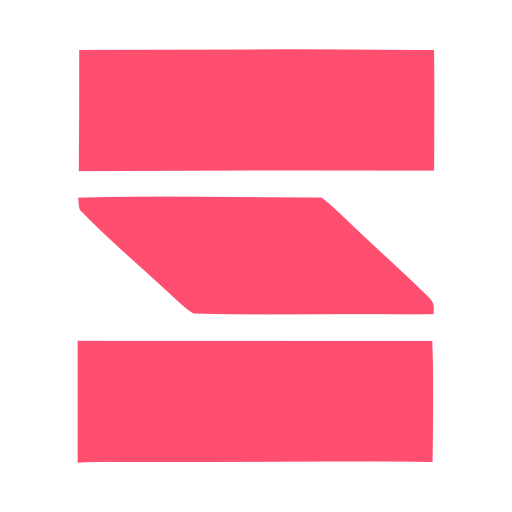

Brand system · v2.0.0
The Shan Labs logo system
Symbols, wordmark, horizontal lockups, and usage guidelines for the Shan Labs brand. All assets available in SVG and PNG formats across multiple sizes.
01
Horizontal lockup
Symbol height = cap height × 1.30, gap = symbol width × 0.30
logo-horizontal-primary.svg · light backgrounds
logo-horizontal-white.svg
logo-horizontal-ink.svg · monochrome & print
1.30×
Symbol to cap height ratio
0.30×
Gap (symbol width based)
0 0 983.97 165
Tight viewBox (SVG)
02
Symbol and wordmark
Primary symbol variants

symbol-coral.svg

symbol-white.svg
symbol-ink.svg · monochrome
Wordmark variants
wordmark-ink.svg

wordmark-white.svg
Avatar and icon

avatar-dark.svg · round crop

favicon.svg · 16px grid
03
Raster exports
Available formats
- Symbols: 128px, 256px, 512px, 1024px
- Horizontal logos: 512px, 1024px
- Favicon: 16px, 32px, 48px, 180px, 192px, 512px
- Avatar: 1024px (before circular crop)
16–32px
Use favicon.svg (16px grid)
24px+
Use master symbol
6mm
Print minimum size
04
Construction and geometry
32-unit grid structure
| Element | Size | Notes |
|---|---|---|
| Master viewBox | 512 × 512 | 1 unit = 16px |
| Mark box | 10u × 12u (320 × 384) | Positioned at x96–416, y64–448 |
| Horizontal rail | 3u tall (96px) | Full mark width |
| Vertical gap | 1u (32px) | Exact at all pixel scales |
| Diagonal bar | 4u extent (128px) | 45° shear, perpendicular stroke 90.5 (5.7% optical reduction) |
| Total stack | 3u + 1u + 4u + 1u + 3u = 12u | Every coordinate is a multiple of 32 |
Clear space
- Horizontal: 3u (96px at master scale, 6% of mark width)
- Vertical: 2u (64px at master scale)
- Non-square aspect ratio requires asymmetric padding to feel balanced
Favicon special case
- Separate 16px-grid drawing (1:32 of master, same 3:1:4 proportions)
- Master symbol gap (1px) anti-aliases at 16px; favicon version widens to 2px
- Use favicon.svg at 16px, 24px, 32px only — master symbol 24px and above
05
Usage guidelines
✓ Preferred use
- Ignition Coral symbol on Cloud White (light) background
- White symbol on Cosmic Ink (dark) background
- Cosmic Ink symbol for monochrome or restrained contexts
- SVG format whenever possible
✗ Prohibited use
- Do not alter geometry, proportions, or internal spacing
- Do not rotate, skew, outline, crop, or stretch the mark
- Do not apply gradients, shadows, glow, glass, or metallic effects
- Do not recolor outside approved variants
- Do not place on backgrounds that reduce legibility
- Do not combine with other icons or create product-specific mutations
Ignition 500
#FD4D6E · preferred primary
Cosmic Ink
#0B1020 · monochrome
Cloud White
#FFFFFF · reverse/dark bg
06
File reference
SVG files (use by default)
assets/logos/svg/
├── symbol-coral.svg
├── symbol-ink.svg
├── symbol-white.svg
├── wordmark-ink.svg
├── wordmark-white.svg
├── logo-horizontal-primary.svg
├── logo-horizontal-ink.svg
└── logo-horizontal-white.svg
PNG files (for systems that cannot consume SVG)
assets/logos/png/
├── symbol-{coral,ink,white}-{128,256,512,1024}.png
├── logo-horizontal-{primary,ink,white}-{512,1024}.png
assets/icons/
├── favicon-{16,32,48,180,192,512}.png
└── avatar-dark-1024.png
Source files (for internal editing only)
source/logos/
├── symbol.svg (32-unit grid, 3 straight-line paths)
└── wordmark.svg (vector outlines)